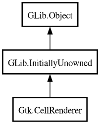

CellRenderer
Object Hierarchy:

Description:
[
CCode ( type_id =
"gtk_cell_renderer_get_type ()" ) ]
public abstract class CellRenderer :
InitiallyUnowned
Content:
Properties:
Creation methods:
Methods:
- public virtual bool activate (Event event, Widget widget, string path, Rectangle background_area, Rectangle cell_area, CellRendererState flags)
- public virtual Rectangle get_aligned_area (Widget widget, CellRendererState flags, Rectangle cell_area)
- public void get_alignment (out float xalign, out float yalign)
- public void get_fixed_size (out int width, out int height)
- public void get_padding (out int xpad, out int ypad)
- public virtual void get_preferred_height (Widget widget, out int minimum_size, out int natural_size)
- public virtual void get_preferred_height_for_width (Widget widget, int width, out int minimum_height, out int natural_height)
- public void get_preferred_size (Widget widget, out Requisition minimum_size, out Requisition natural_size)
- public virtual void get_preferred_width (Widget widget, out int minimum_size, out int natural_size)
- public virtual void get_preferred_width_for_height (Widget widget, int height, out int minimum_width, out int natural_width)
- public virtual SizeRequestMode get_request_mode ()
- public bool get_sensitive ()
- public virtual void get_size (Widget widget, Rectangle? cell_area, out int x_offset, out int y_offset, out int width, out int height)
- public StateFlags get_state (Widget? widget, CellRendererState cell_state)
- public bool get_visible ()
- public bool is_activatable ()
- public abstract void render (Context cr, Widget widget, Rectangle background_area, Rectangle cell_area, CellRendererState flags)
- public class void set_accessible_type (Type type)
- public void set_alignment (float xalign, float yalign)
- public void set_fixed_size (int width, int height)
- public void set_padding (int xpad, int ypad)
- public void set_sensitive (bool sensitive)
- public void set_visible (bool visible)
- public virtual unowned CellEditable? start_editing (Event? event, Widget widget, string path, Rectangle background_area, Rectangle cell_area, CellRendererState flags)
- public void stop_editing (bool canceled)
Signals:
Inherited Members:
All known members inherited from class GLib.Object